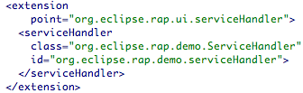
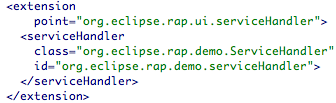
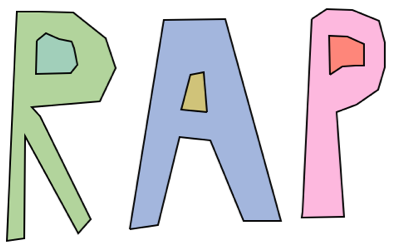
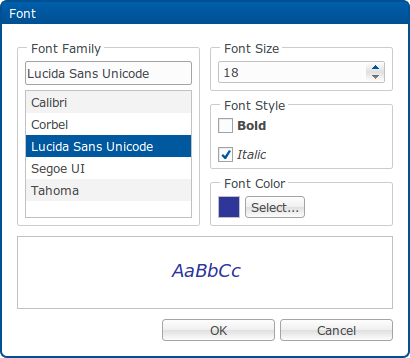
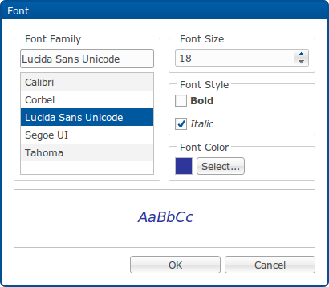

RAP 1.3 M7 - New and Noteworthy
Here are some of the more noteworthy things that are available in the milestone build M7 (May 4th, 2010) which is now available for download.
This list shows all bugs that were fixed during this milestone.
SWT API implemented
Here is a list of SWT API that was implemented in M7:
Device#getDPI()Device#getDepth()Display#beep()Image#getBackground()Image#setBackground()SWT#CURSOR_NOandSWT#CURSOR_APPSTARTINGSWT#getVersion()Display#findDisplay()Display#getSyncThread()Display#getCursorControl()
Theme Contributions
It is now possible to contribute CSS code to existing themes using the
extension point

org.eclipse.rap.ui.themes.
This way, plug-in developers can easily add CSS rules for their controls
without the need to copy and extend an existing theme.
ServiceHandlers
It is now possible to contribute

ServiceHandlers via
extensions using the extension point
org.eclipse.rap.ui.serviceHandler.
This way, plug-in developers can easily declare ServiceHandlers
instead of registering them programmtically.

Theme Extensions
The theming was extended in serveral places
-
The Shell has a new themeable element called
Shell-DisplayOverlay. When a modal shell with is opened, there is a usually invisible element that is blocking all user-interactions with what is behind the shell. This "overlay" can now be themed to visualize this behaviour, using a semi-transparent background-color or image.
For example:Shell-DisplayOverlay { background-image: none; background-color: #000000; opacity: 0.5; }

-
We introduced the
opacity-property on the following widgets:
Label,CLabel,Composite,Menu,Menuitem,ToolBar,ToolItem,ToolTipandProgressBar-Indicator

This is an easy way to achieve semi-transparency. Be aware that there are currently two unresolved issues regarding its use in Internet Explorer: Bug 302713 and Bug 303603
In some cases those can trigger minor graphical glitches. - The Combo and CCombo widgets now have a styleable FocusIndicator like Button.
- The Text widget now supports backgroundGradient.
-
Tables with alternating row colors, combined with vertical-only grid
lines are a common design that was so far not supported by RAP. With
the introduction of the
verticalandhorizontalstates for theTable-GridLine-element, this is now possible:Table-GridLine { color: #d0d0d0; } Table-GridLine:horizontal { color: transparent; }

-
We now support animations as part of the theming. They allow for simple
transition-effects to create a more organic user-experience. Currently
only a few widgets (
Button,ToolItem,ToolTip,Shell-DisplayOverlay,Menu) and effects are available, but you can expect more in the future. The API is a subset of the CSS3 Working Draft for animations. To define an animation you need to set three values (effect, duration, and timing function) and you can define several per widget.
For example, to create an animated hover-effect for buttons, the syntax could look like this:Button : { animation: hoverIn 200ms linear, hoverOut 500ms ease-out; }
Graphics Context
A subset of the graphics context (GC) from SWT is now available in RAP.
It can be used for basic drawing on the the
The graphics are rendered on HTML5 Canvas on the client, for Internet Explorer, a VML-based (vector-graphics) emulation is used. The performance on IE may degrade drastically when the number of shapes drawn exceeds a limit of about 500.
To see the graphics context in action, try out the Canvas page in the RAP Examples.
Canvas widget:
Canvas canvas = new Canvas( parent, SWT.NONE );
canvas.addPaintListener( new PaintListener() {
public void paintControl( PaintEvent event ) {
Rectangle rect = canvas.getClientArea();
event.gc.drawOval( 0, 0, rect.width - 1, rect.height - 1 );
}
} );

The graphics are rendered on HTML5 Canvas on the client, for Internet Explorer, a VML-based (vector-graphics) emulation is used. The performance on IE may degrade drastically when the number of shapes drawn exceeds a limit of about 500.
To see the graphics context in action, try out the Canvas page in the RAP Examples.
Font Dialog
RAP now contains an implementation of the SWT FontDialog.


The above features are just the ones that are new since the last milestone build. Summaries for earlier builds:
- New for RAP 1.3 M6
- New for RAP 1.3 M5
- New for RAP 1.3 M4
- New for RAP 1.3 M3
- New for RAP 1.3 M2
- New for RAP 1.3 M1